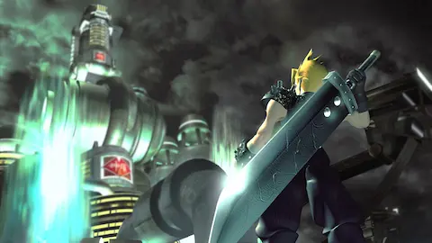

x"π GAMING
x
& 25 · FEB · 2026

Square Enix ha relanzado el FF7 original en Steam y GOG con modo velocidad x3, sin encuentros aleatorios, mejoras de batalla y autoguardado. Gratis para due√±os del port de 2013. El problema: sali√≥ sin ejecutable, lleva reviews ‚¨‹Mostly Negative‚¨" y los mods de 7th Heaven a√∫n no son compatibles. Cl√°sico Square.